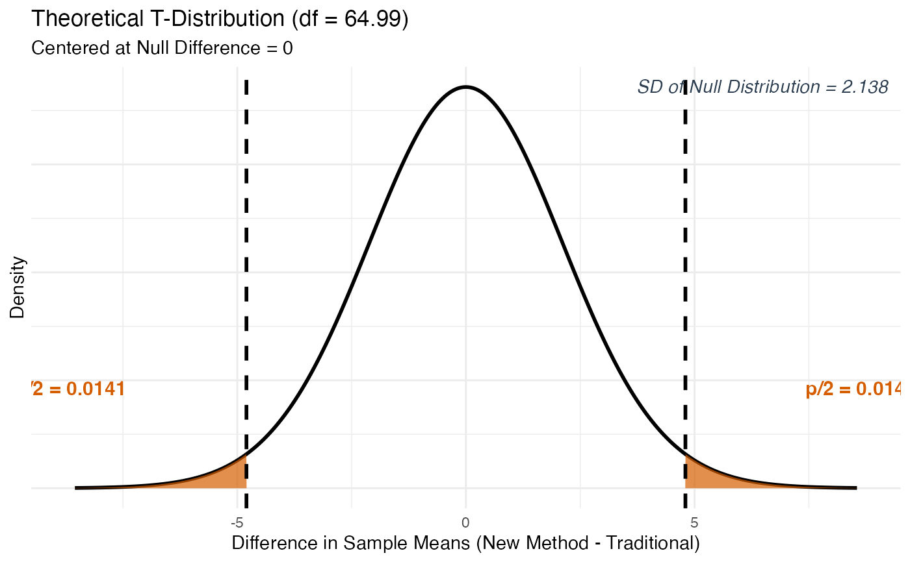
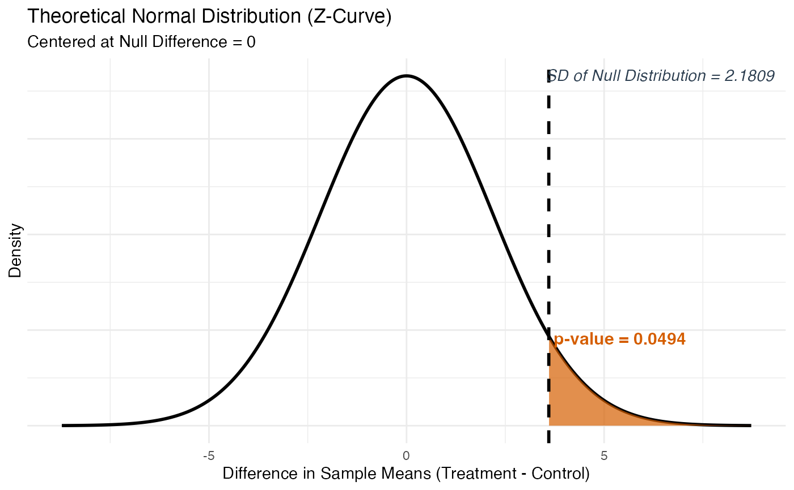
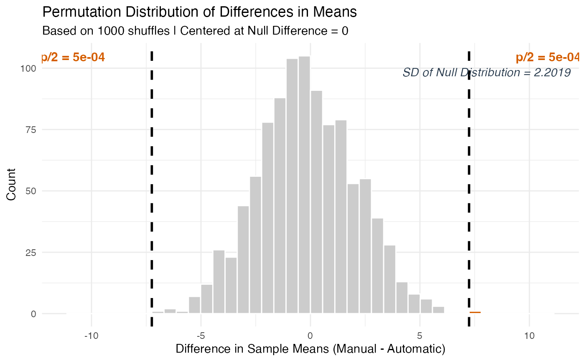
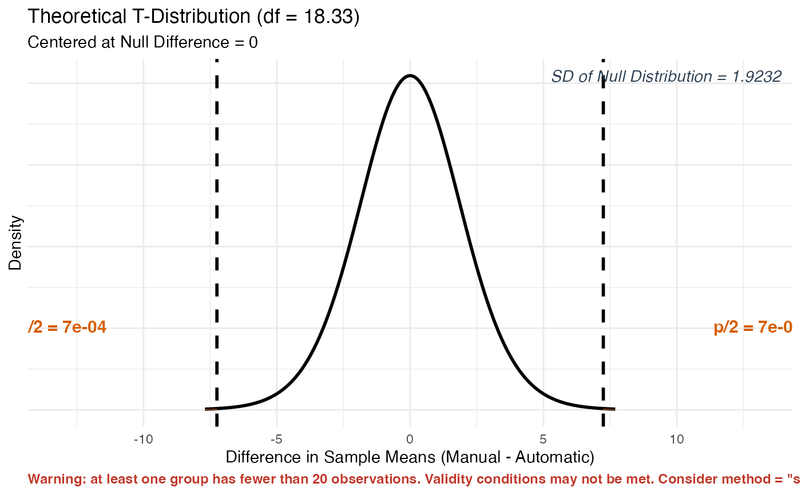
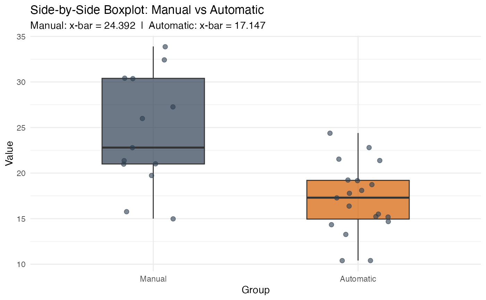

Tests whether two population means are equal (\(\mu_1 = \mu_2\)) using either a theory-based Z-test or T-test, or a simulation-based permutation approach (when raw data is provided).
This function accepts input in two ways:
Summary Statistics: You already know the sample mean, standard deviation, and sample size for both groups (common in textbook homework problems). Pass
x_bar_1,sd_1,n_1,x_bar_2,sd_2, andn_2directly. Note thatmethod = "simulation"is not available with summary statistics – simulation requires access to the individual data values.Raw Data: You have an actual dataset loaded into R (common in activities and projects). Pass
formulaanddatainstead, and the function computes all summary statistics for you. Bothmethod = "theory"andmethod = "simulation"are available with raw data.
Usage
test_2mean(
x_bar_1 = NULL,
sd_1 = NULL,
n_1 = NULL,
x_bar_2 = NULL,
sd_2 = NULL,
n_2 = NULL,
group_names = NULL,
sd_type = "sample",
formula = NULL,
data = NULL,
alternative = "two.sided",
method = "theory",
sim_reps = 1000
)Arguments
- x_bar_1
The observed sample mean of Group 1. For example, if the average rolling time for black-capped beetles was 4.2 seconds,
x_bar_1 = 4.2. Only used when NOT providingformulaanddata.- sd_1
The standard deviation of Group 1. Whether this is a sample SD or population SD is determined by
sd_type. Only used when NOT providingformulaanddata.- n_1
The sample size of Group 1. Only used when NOT providing
formulaanddata.- x_bar_2
The observed sample mean of Group 2. Only used when NOT providing
formulaanddata.- sd_2
The standard deviation of Group 2. Only used when NOT providing
formulaanddata.- n_2
The sample size of Group 2. Only used when NOT providing
formulaanddata.- group_names
A character vector of length 2 giving meaningful names to the two groups. For example,
group_names = c("Black Cap", "Clear Cap"). Defaults toc("Group 1", "Group 2"). When using raw data, group names are extracted automatically from the grouping variable. Only used when NOT providingformulaanddata.- sd_type
A character string telling the function whether the standard deviations provided are from the population or the sample. Must be one of:
"sample"(default) The standard deviations were calculated from the sample data. A T-test is used with degrees of freedom computed automatically using the Satterthwaite approximation.
"population"The true population standard deviations (\(\sigma\)) are known. A Z-test is used. This is rare in practice but occasionally given in textbook problems.
- formula
A two-sided formula of the form
Response ~ Groupthat identifies the numeric response variable and the grouping variable in your dataset. For example,formula = RollingTime ~ CapTypewhereRollingTimeis the quantitative outcome andCapTypedefines the two groups. Only used when NOT providing summary statistics.- data
A data frame (loaded from a
.csv,.txt, or.xlsxfile) that contains the variables named informula. Only used when NOT providing summary statistics.- alternative
The direction of the alternative hypothesis (H\(_a\)). Must be one of:
"two.sided"H\(_a\): \(\mu_1 - \mu_2 \neq 0\) (default) – use when testing if the two means are simply different.
"greater"H\(_a\): \(\mu_1 - \mu_2 > 0\) – use when testing if Group 1's mean is greater than Group 2's.
"less"H\(_a\): \(\mu_1 - \mu_2 < 0\) – use when testing if Group 1's mean is less than Group 2's.
- method
The method used to calculate the p-value. Must be one of:
"theory"(default) Uses the Z-test (if
sd_type = "population") or T-test (ifsd_type = "sample") with an unpooled standard error. Appropriate when both groups have at least 20 observations, or when the distributions are known to be roughly symmetric."simulation"Uses a Permutation Test. All numerical values from both groups are pooled together and repeatedly reshuffled into two groups of the original sizes. Think of it as writing each observation on an index card, shuffling all cards, and re-dealing them into two piles. This method requires raw data and is not available when using summary statistics.
- sim_reps
The number of permutation shuffles when
method = "simulation". Default is1000. Increasing to5000gives a more stable p-value estimate.
Value
An S3 object of class stat218_2mean containing all computed
values. You can use the following methods on the result:
print(result)Displays a clean summary including both group means, the observed difference, SD of null distribution, test statistic, and p-value.
plot(result)Default shows the null distribution with shaded p-value region(s) and SD of Null Distribution annotated. Use
plot(result, plot_type = "boxplot")for side-by-side boxplots of the two groups (only available when raw data was provided).plot_steps(result)Displays a detailed three-panel step-by-step interpretation with proper fraction notation.
Details
The Core Idea
In a two-sample mean test, we ask: "Is the difference in average values we observed between two groups consistent with random chance, or is there real evidence that the two population means are different?"
The null hypothesis always takes the form H\(_0\): \(\mu_1 - \mu_2 = 0\), meaning we assume no difference between the two population means.
Simulation Method (Permutation Test)
We simulate the null hypothesis by treating all observed values as interchangeable between groups – just like the beetle study in the textbook. All values are pooled, shuffled, and re-dealt into two groups of the original sizes. The difference in group means is recorded for each shuffle. The SD of that simulated null distribution goes in the denominator of the test statistic. The p-value is the proportion of shuffles that produced a difference as extreme as or more extreme than observed.
Theory Method (Unpooled T-test or Z-test)
Unlike the two-proportion test, the two-mean test uses an unpooled
standard error because there is no natural pooling assumption for means.
When sd_type = "sample", degrees of freedom are computed automatically
using the Satterthwaite approximation and handled in the background.
Validity Conditions
The theory-based test is most reliable when:
Both groups have at least 20 observations (n\(_1 \geq 20\) and n\(_2 \geq 20\)), or
The distributions within both groups are known to be roughly symmetric, even for smaller samples.
A warning is issued automatically if either group has fewer than 20
observations and method = "theory".
Examples
# --- Summary Statistics Path (two-sided, theory T-test) ---
# Comparing average exam scores between two teaching methods.
result <- test_2mean(
x_bar_1 = 78.3, sd_1 = 9.1, n_1 = 35,
x_bar_2 = 73.5, sd_2 = 8.4, n_2 = 32,
group_names = c("New Method", "Traditional"),
alternative = "two.sided", method = "theory"
)
print(result)
#>
#> ── 2-Sample Means Hypothesis Test (Theory) ─────────────────────────────────────
#> ℹ New Method: x-bar = 78.3 | s = 9.1 | n = 35
#> ℹ Traditional: x-bar = 73.5 | s = 8.4 | n = 32
#> ℹ Null Hypothesis: mu1 - mu2 = 0
#> ℹ Alternative: mu1 - mu2 != 0
#> • Observed Difference (x-bar1 - x-bar2): 4.8
#> • SD of Null Distribution: 2.138
#> • Test Statistic (T): 2.245
#> • P-Value: 0.0282
plot(result)

if (FALSE) { # \dontrun{
plot_steps(result)
} # }
# --- Summary Statistics Path (one-sided, theory Z-test) ---
result2 <- test_2mean(
x_bar_1 = 82.1, sd_1 = 10.0, n_1 = 40,
x_bar_2 = 78.5, sd_2 = 9.5, n_2 = 40,
group_names = c("Treatment", "Control"),
sd_type = "population",
alternative = "greater", method = "theory"
)
print(result2)
#>
#> ── 2-Sample Means Hypothesis Test (Theory) ─────────────────────────────────────
#> ℹ Treatment: x-bar = 82.1 | sigma = 10 | n = 40
#> ℹ Control: x-bar = 78.5 | sigma = 9.5 | n = 40
#> ℹ Null Hypothesis: mu1 - mu2 = 0
#> ℹ Alternative: mu1 - mu2 > 0
#> • Observed Difference (x-bar1 - x-bar2): 3.6
#> • SD of Null Distribution: 2.1809
#> • Test Statistic (Z): 1.651
#> • P-Value: 0.0494
plot(result2)

if (FALSE) { # \dontrun{
plot_steps(result2)
} # }
# --- Raw Data Path (two-sided, simulation) ---
# Using mtcars: does average MPG differ between automatic and manual?
car_data <- mtcars
car_data$transmission <- ifelse(mtcars$am == 1, "Manual", "Automatic")
result3 <- test_2mean(
formula = mpg ~ transmission, data = car_data,
alternative = "two.sided", method = "simulation"
)
#> ✔ Data extracted from "mpg" ~ "transmission":
#> • Manual: x-bar = 24.3923, s = 6.1665, n = 13
#> • Automatic: x-bar = 17.1474, s = 3.834, n = 19
print(result3)
#>
#> ── 2-Sample Means Hypothesis Test (Simulation) ─────────────────────────────────
#> ℹ Manual: x-bar = 24.3923 | s = 6.1665 | n = 13
#> ℹ Automatic: x-bar = 17.1474 | s = 3.834 | n = 19
#> ℹ Null Hypothesis: mu1 - mu2 = 0
#> ℹ Alternative: mu1 - mu2 != 0
#> • Observed Difference (x-bar1 - x-bar2): 7.2449
#> • SD of Null Distribution: 2.2019
#> • Test Statistic (Z_sim): 3.29
#> • P-Value: 0.001
plot(result3)

plot(result3, plot_type = "boxplot")
if (FALSE) { # \dontrun{
plot_steps(result3)
} # }
# --- Raw Data Path (two-sided, theory T-test) ---
result4 <- test_2mean(
formula = mpg ~ transmission, data = car_data,
alternative = "two.sided", method = "theory"
)
#> ✔ Data extracted from "mpg" ~ "transmission":
#> • Manual: x-bar = 24.3923, s = 6.1665, n = 13
#> • Automatic: x-bar = 17.1474, s = 3.834, n = 19
#> Warning: ! Validity conditions for the theory-based test may not be met.
#> ℹ At least one group has fewer than 20 observations:
#> • Manual: n = 13
#> • Automatic: n = 19
#> ℹ Proceed only if the distributions within both groups are roughly symmetric.
#> ℹ Otherwise consider using `method = "simulation"`.
print(result4)
#>
#> ── 2-Sample Means Hypothesis Test (Theory) ─────────────────────────────────────
#> ℹ Manual: x-bar = 24.3923 | s = 6.1665 | n = 13
#> ℹ Automatic: x-bar = 17.1474 | s = 3.834 | n = 19
#> ℹ Null Hypothesis: mu1 - mu2 = 0
#> ℹ Alternative: mu1 - mu2 != 0
#> • Observed Difference (x-bar1 - x-bar2): 7.2449
#> • SD of Null Distribution: 1.9232
#> • Test Statistic (T): 3.767
#> • P-Value: 0.0014
#> Warning: ! Validity conditions may not be met -- at least one group has fewer than 20
#> observations.
#> ℹ Verify that distributions within both groups are roughly symmetric.
#> ℹ Consider using `method = "simulation"` if raw data is available.
plot(result4)

plot(result4, plot_type = "boxplot")

if (FALSE) { # \dontrun{
plot_steps(result4)
} # }